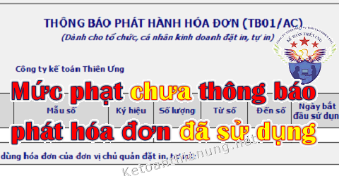

Sử dụng hóa đơn chưa thông báo phát hành, mức phạt không nộp thông báo phát hành hóa đơn đã sử dụng; Mức phạt chậm nộp mẫu TB04/AC thông báo điều chỉnh thông báo phát hành hóa đơn.
Căn cứ theo Nghị định 125/2020/NĐ-CP ngày 19/10/2020 có hiệu lực từ ngày 05/12/2020 quy định cụ thể như sau:
Nguyên tắc áp dụng mức phạt tiền:
- Khi xác định mức phạt tiền đối với người nộp thuế vi phạm vừa có tình tiết tăng nặng, vừa có tình tiết giảm nhẹ thì được giảm trừ tình tiết tăng nặng theo nguyên tắc một tình tiết giảm nhẹ được giảm trừ một tình tiết tăng nặng.
- Các tình tiết giảm nhẹ hoặc tăng nặng đã được sử dụng để xác định khung tiền phạt thì không được sử dụng khi xác định số tiền phạt cụ thể như sau:
+) Khi phạt tiền, mức phạt tiền cụ thể đối với một hành vi vi phạm thủ tục hóa đơn là mức trung bình của khung phạt tiền được quy định đối với hành vi đó.
+) Nếu có tình tiết giảm nhẹ, thì mỗi tình tiết được giảm 10% mức tiền phạt trung bình của khung tiền phạt nhưng mức phạt tiền đối với hành vi đó không được giảm quá mức tối thiểu của khung tiền phạt;
+) Nếu có tình tiết tăng nặng thì mỗi tình tiết tăng nặng được tính tăng 10% mức tiền phạt trung bình của khung tiền phạt nhưng mức phạt tiền đối với hành vi đó không được vượt quá mức tối đa của khung tiền phạt.
---------------------------------------------------------------------------------
Các mức xử phạt vi phạm quy định về phát hành hóa đơn:1. Mức phạt chậm nộp Mẫu TB04/AC Thông báo điều chỉnh thông báo phát hành hóa đơn:
- Phạt tiền từ 500.000 đồng đến 1.500.000 đồng đối với một trong các hành vi sau đây:
a) Nộp thông báo điều chỉnh thông tin tại thông báo phát hành hóa đơn đến cơ quan thuế quản lý trực tiếp khi thay đổi địa chỉ kinh doanh dẫn đến thay đổi cơ quan thuế quản lý trực tiếp hoặc khi thay đổi tên quá thời hạn từ 10 ngày đến 20 ngày, kể từ ngày bắt đầu sử dụng hóa đơn tại địa chỉ mới hoặc bắt đầu sử dụng hóa đơn với tên mới;
b) Nộp bảng kê hóa đơn chưa sử dụng đến cơ quan thuế nơi chuyển đến khi thay đổi địa chỉ kinh doanh dẫn đến thay đổi cơ quan thuế quản lý trực tiếp quá thời hạn từ 10 ngày đến 20 ngày, kể từ ngày bắt đầu sử dụng hóa đơn tại địa chỉ mới;
c) Sử dụng hóa đơn đã được thông báo phát hành với cơ quan thuế nhưng chưa đến thời hạn sử dụng.
-----------------------------------------------------------------
2. Mức phạt lập Thông báo phát hành hóa đơn không đầy đủ nội dung:
- Phạt tiền từ 2.000.000 đồng đến 4.000.000 đồng đối với một trong các hành vi sau đây:
a) Lập thông báo phát hành hóa đơn không đầy đủ nội dung theo quy định đã được cơ quan thuế phát hiện và có văn bản thông báo cho tổ chức, cá nhân biết để điều chỉnh nhưng tổ chức, cá nhân chưa điều chỉnh mà đã lập hóa đơn giao cho khách hàng;
b) Không niêm yết thông báo phát hành hóa đơn theo đúng quy định;
c) Nộp thông báo điều chỉnh thông tin tại thông báo phát hành hóa đơn đến cơ quan thuế quản lý trực tiếp khi thay đổi địa chỉ kinh doanh dẫn đến thay đổi cơ quan thuế quản lý trực tiếp hoặc khi thay đổi tên quá thời hạn từ 21 ngày trở lên, kể từ ngày bắt đầu sử dụng hóa đơn tại địa chỉ mới hoặc bắt đầu sử dụng hóa đơn với tên mới;
d) Nộp bảng kê hóa đơn chưa sử dụng đến cơ quan thuế nơi chuyển đến khi thay đổi địa chỉ kinh doanh dẫn đến thay đổi cơ quan thuế quản lý trực tiếp quá thời hạn từ 21 ngày trở lên, kể từ ngày bắt đầu sử dụng hóa đơn tại địa chỉ mới.
--------------------------------------------------------------
3. Mức phạt không nộp Thông báo phát hành hóa đơn trước khi sử dụng:
- Phạt tiền từ 6.000.000 đồng đến 18.000.000 đồng đối với hành vi Không lập thông báo phát hành hóa đơn trước khi hóa đơn được đưa vào sử dụng nếu các hóa đơn này gắn với nghiệp vụ kinh tế phát sinh và đã khai, nộp thuế hoặc chưa đến kỳ kê khai, nộp thuế theo quy định.
---------------------------------------------------------------------
Chú ý: - Trường hợp không lập thông báo phát hành hóa đơn trước khi hóa đơn được đưa vào sử dụng nếu các hóa đơn này không gắn với nghiệp vụ kinh tế phát sinh hoặc quá thời hạn khai thuế mà chưa được khai, nộp thuế theo quy định thì bị xử phạt theo quy định tại Điều 28 Nghị định này hoặc Điều 16, Điều 17 Chương II Nghị định này.
Nghĩa là: Trường hợp không lập thông báo phát hành hóa đơn mà đã xuất hóa đơn -> Nếu các hóa đơn này không gắn với nghiệp vụ kinh tế phát sinh hoặc quá thời hạn khai thuế mà chưa được khai, nộp thuế => Thì bị xử phạt về hành vi sử dụng hóa đơn không hợp pháp (Điều 28) hoặc bị xử phạt về hành vi trốn thuế (Điều 16, Điều 17), cụ thể như sau:
a, Nếu bị phạt theo điều 28:
"Điều 28. Xử phạt đối với hành vi sử dụng hóa đơn không hợp pháp, sử dụng không hợp pháp hóa đơn
1. Phạt tiền từ 20.000.000 đồng đến 50.000.000 đồng đối với hành vi sử dụng hóa đơn không hợp pháp, sử dụng không hợp pháp hóa đơn quy định tại Điều 4 Nghị định này, trừ trường hợp được quy định tại điểm đ khoản 1 Điều 16 và điểm d khoản 1 Điều 17 Nghị định này."
Chi tiết xem thêm: Mức phạt sử dụng hóa đơn không hợp pháp.
b, Nếu bị phạt theo Điều 16, Điều 17:
"Điều 16. Xử phạt hành vi khai sai dẫn đến thiếu số tiền thuế phải nộp hoặc tăng số tiền thuế được miễn, giảm, hoàn
1. Phạt 20% số tiền thuế khai thiếu hoặc số tiền thuế đã được miễn, giảm, hoàn cao hơn so với quy định đối với một trong các hành vi sau đây:
đ) Sử dụng hóa đơn, chứng từ không hợp pháp để hạch toán giá trị hàng hóa, dịch vụ mua vào làm giảm số tiền thuế phải nộp hoặc làm tăng số tiền thuế được hoàn, số tiền thuế được miễn, giảm nhưng khi cơ quan thuế thanh tra, kiểm tra phát hiện, người mua chứng minh được lỗi vi phạm sử dụng hóa đơn, chứng từ không hợp pháp thuộc về bên bán hàng và người mua đã hạch toán kế toán đầy đủ theo quy định."
"Điều 17. Xử phạt hành vi trốn thuế:
1. Phạt tiền 1 lần số thuế trốn đối với người nộp thuế có từ một tình tiết giảm nhẹ trở lên khi thực hiện một trong các hành vi vi phạm sau đây:
d) Sử dụng hóa đơn không hợp pháp; sử dụng không hợp pháp hóa đơn để khai thuế làm giảm số thuế phải nộp hoặc tăng số tiền thuế được hoàn, số tiền thuế được miễn, giảm;
đ) Sử dụng chứng từ không hợp pháp; sử dụng không hợp pháp chứng từ; sử dụng chứng từ, tài liệu không phản ánh đúng bản chất giao dịch hoặc giá trị giao dịch thực tế để xác định sai số tiền thuế phải nộp, số tiền thuế được miễn, giảm, số tiền thuế được hoàn; lập thủ tục, hồ sơ hủy vật tư, hàng hóa không đúng thực tế làm giảm số thuế phải nộp hoặc làm tăng số thuế được hoàn, được miễn, giảm;
2. Phạt tiền 1,5 lần số tiền thuế trốn đối với người nộp thuế thực hiện một trong các hành vi quy định tại khoản 1 nêu trên mà không có tình tiết tăng nặng, giảm nhẹ.
3. Phạt tiền 2 lần số thuế trốn đối với người nộp thuế thực hiện một trong các hành vi quy định tại khoản 1 nêu trên mà có một tình tiết tăng nặng.
4. Phạt tiền 2,5 lần số tiền thuế trốn đối với người nộp thuế thực hiện một trong các hành vi quy định tại khoản 1 nêu trên có hai tình tiết tăng nặng.
5. Phạt tiền 3 lần số tiền thuế trốn đối với người nộp thuế thực hiện một trong các hành vi quy định tại khoản 1 nêu trên có từ ba tình tiết tăng nặng trở lên."
Chi tiết xem thêm: Mức phạt trốn thuế.
---------------------------------------------------------------------------------
Chú ý: Trước ngày 5/12/2020 thì Quy định về xử phạt thông báo phát hành hóa đơn được áp dụng theo quy định tại Điều 10 Thông tư Số 10/2014/TT-BTC và Điều 1 Thông tư 176/2016/TT-BTC, cụ thể như sau:
I. Mức phạt lập Thông báo phát hành hóa đơn không đầy đủ nội dung:
Phạt tiền từ 2.000.000 đồng đến 4.000.000 đồng đối với một trong các hành vi:
a) Lập Thông báo phát hành không đầy đủ nội dung theo quy định đã được cơ quan thuế phát hiện và có văn bản thông báo cho tổ chức, cá nhân biết để điều chỉnh nhưng tổ chức, cá nhân chưa điều chỉnh mà đã lập hoá đơn giao cho khách hàng.
- Trường hợp có tình tiết giảm nhẹ thì phạt tiền ở mức tối thiểu của khung tiền phạt là 2.000.000 đồng.
b) Không niêm yết Thông báo phát hành hóa đơn theo đúng quy định.
- Việc niêm yết Thông báo phát hành hoá đơn thực hiện theo hướng dẫn tại Thông tư của Bộ Tài chính về hoá đơn bán hàng hoá, cung ứng dịch vụ.
- Trường hợp có tình tiết giảm nhẹ thì phạt tiền ở mức tối thiểu của khung tiền phạt là 2.000.000 đồng.
-------------------------------------------------------------------------------
II. Mức phạt không nộp Thông báo phát hành hóa đơn trước khi sử dụng:a) Trường hợp tổ chức, cá nhân chứng minh đã gửi thông báo phát hành hóa đơn cho cơ quan thuế trước khi hóa đơn được đưa vào sử dụng nhưng cơ quan thuế không nhận được do thất lạc thì tổ chức, cá nhân không bị xử phạt.
b) Phạt tiền 6.000.000 đồng đối với hành vi:
- Không nộp Thông báo phát hành hóa đơn trước khi hóa đơn được đưa vào sử dụng nếu các hóa đơn này gắn với nghiệp vụ kinh tế phát sinh đã được kê khai, nộp thuế theo quy định.
c) Phạt tiền từ 6.000.000 đồng đến 18.000.000 đồng đối với hành vi:
- Không nộp Thông báo phát hành hóa đơn trước khi hóa đơn được đưa vào sử dụng nếu các hóa đơn này gắn với nghiệp vụ kinh tế phát sinh nhưng chưa đến kỳ khai thuế.
-> Người bán phải cam kết kê khai, nộp thuế đối với các hóa đơn đã lập trong trường hợp này.
Chú ý: Nếu người bán có hành vi vi phạm quy định tại điểm a, điểm b và điểm c nêu trên và đã chấp hành Quyết định xử phạt. => Thì người mua hàng được sử dụng hóa đơn để kê khai, khấu trừ, tính vào chi phí.
d) Trường hợp tổ chức, cá nhân không nộp Thông báo phát hành hóa đơn trước khi hóa đơn được đưa vào sử dụng nếu các hóa đơn này không gắn với nghiệp vụ kinh tế phát sinh hoặc không được kê khai, nộp thuế: => Thì xử phạt từ 20.000.000 đồng đến 50.000.000 đồng đối với hành vi sử dụng hóa đơn bất hợp pháp.
-> Tổ chức, cá nhân vi phạm quy định tại Điều này còn phải thực hiện thủ tục phát hành hóa đơn theo quy định.
-------------------------------------------------------------------------------
III. Mức phạt chậm nộp Mẫu TB04/AC Thông báo điều chỉnh thông báo phát hành hóa đơn:
1. Phạt tiền từ 500.000 đồng đến 1.500.000 đồng đối với một trong các hành vi:
a) Nộp thông báo điều chỉnh thông tin tại thông báo phát hành hóa đơn đến cơ quan thuế quản lý trực tiếp và hành vi nộp bảng kê hóa đơn chưa sử dụng đến cơ quan thuế nơi chuyển đến khi doanh nghiệp thay đổi địa chỉ kinh doanh dẫn đến thay đổi cơ quan thuế quản lý trực tiếp chậm sau 10 ngày kể từ ngày bắt đầu sử dụng hóa đơn tại địa chỉ mới.
b) Sử dụng hóa đơn đã được thông báo phát hành với cơ quan thuế nhưng chưa đến thời hạn sử dụng (05 ngày kể từ ngày gửi thông báo phát hành).
2. Phạt tiền từ 2.000.000 đồng đến 4.000.000 đồng đối với một trong các hành vi:
c) Nộp thông báo điều chỉnh thông tin tại thông báo phát hành hóa đơn đến cơ quan thuế quản lý trực tiếp và hành vi nộp bảng kê hóa đơn chưa sử dụng đến cơ quan thuế nơi chuyển đến khi doanh nghiệp thay đổi địa chỉ kinh doanh dẫn đến thay đổi cơ quan thuế quản lý trực tiếp từ sau 20 ngày kể từ ngày bắt đầu sử dụng hóa đơn tại địa chỉ mới.
Các quy định trên được quy định tại Điều 10 Thông tư Số 10/2014/TT-BTC và Điều 1 Thông tư 176/2016/TT-BTC
--------------------------------------------------------------------------------
Lưu ý: Làm mất hóa đơn khi chưa Thông báo phát hành
Cứ cứ theo khoản 3 Điều 7 Thông tư Số 10/2014/TT-BTC quy định:
"3. Đối với hành vi không khai báo đúng quy định việc mất hóa đơn trước khi thông báo phát hành.
a) Không xử phạt nếu việc mất, cháy, hỏng hóa đơn trước khi thông báo phát hành được khai báo với cơ quan thuế trong vòng 5 ngày kể từ ngày xảy ra việc mất, cháy, hỏng hóa đơn.
b) Phạt cảnh cáo nếu việc mất, cháy, hỏng hóa đơn trước khi thông báo phát hành khai báo với cơ quan thuế từ ngày thứ 6 đến hết ngày thứ 10 kể từ ngày xảy ra việc mất, cháy, hỏng hóa đơn và có tình tiết giảm nhẹ;
- Trường hợp không có tình tiết giảm nhẹ thì xử phạt ở mức tối thiểu của khung hình phạt.
c) Phạt tiền từ 6.000.000 đồng đến 18.000.000 đồng nếu việc mất, cháy, hỏng, hóa đơn trước khi thông báo phát hành khai báo với cơ quan thuế sau ngày thứ 10 kể từ ngày xảy ra việc mất, cháy, hỏng hóa đơn."
-------------------------------------------------------------------------------------
Ngoài ra các bạn có thể xem thêm các trường hợp khác về hóa đơn như mất hóa đơn, viết sai thứ tự số hóa đơn...
Chi tiết xem tại đây: Các mức xử phạt vi phạm về hóa đơn
Kế toán Diệu Tâm chúc các bạn thành công.
__________________________________________________
